Acolyte
Valeurs de caractéristique. Intelligence, Sagesse, Charisme
Don. Initié à la magie (clerc)
Maîtrises de compétence. Intuition et Religion
Maîtrise d'outils. Matériel de calligraphe
Équipement. Choisissez A ou B : (A) Matériel de calligraphe, livre (prières), symbole sacré, parchemin (10 feuilles), robe, 8 po ; ou (B) 50 po
Vous étiez au service d'un temple, en ville ou retiré dans un bosquet sacré. Vous y avez accompli des rites en l'honneur d'un dieu ou d'un panthéon. Vous avez servi un prêtre et étudié la religion. Grâce à l'instruction de ce prêtre et à votre propre dévotion, vous avez également appris à canaliser un peu de puissance divine au service de votre lieu de culte et de ceux qui y priaient.
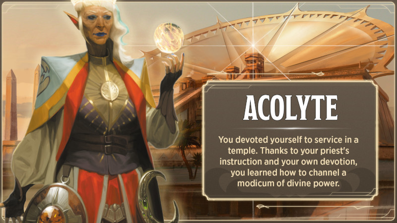
Artisan
Valeurs de caractéristique. Force, Dextérité, Intelligence
Don. Façonneur
Maîtrises de compétence. Investigation et Persuasion
Maîtrise d'outils. Choisissez un type parmi les outils d'artisan
Équipement. Choisissez A ou B : (A) Outils d'artisan (identiques à ci-dessus), 2 sacoches, tenue de voyage, 32 po ; ou (B) 50 po
Dès que vous avez été assez fort pour porter un seau, vous avez commencé à laver les sols et à frotter les comptoirs dans un atelier d'artisan pour quelques sous par jour. Quand vous avez eu l'âge de faire votre apprentissage, vous avez appris à créer vos propres objets artisanaux, ainsi qu'à charmer les clients parfois exigeants. Ce métier vous a aussi donné un sens aigu du détail.
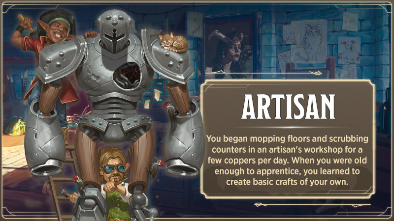
Artiste
Valeurs de caractéristique. Force, Dextérité, Charisme
Don. Musicien
Maîtrises de compétence. Acrobaties et Représentation
Maîtrise d'outils. Choisissez un instrument de musique
Équipement. Choisissez A ou B : (A) Instrument de musique (identique à ci-dessus), 2 costumes, miroir, parfum, tenue de voyage, 11 po ; ou (B) 50 po
Vous avez passé une grande partie de votre jeunesse à suivre les fêtes foraines et les carnavals itinérants, enchaînant les petits boulots pour des musiciens et des acrobates en échange de leçons. Vous avez peut-être appris à marcher sur un fil, à jouer du luth dans un style bien particulier, ou à réciter de la poésie avec une diction impeccable. Aujourd'hui encore, vous vous épanouissez sous les applaudissements et rêvez de monter sur scène.
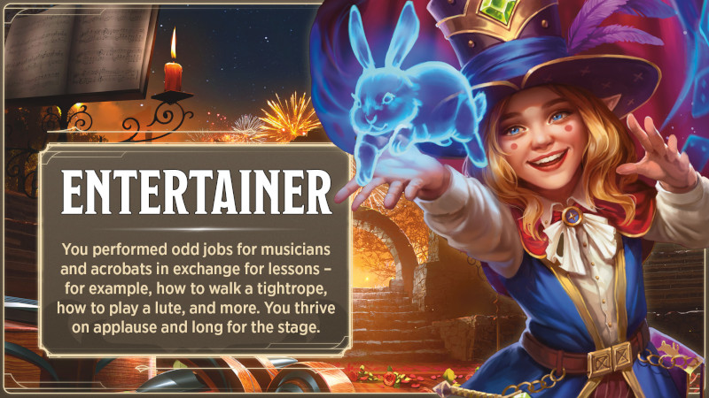
Charlatan
Valeurs de caractéristique. Dextérité, Constitution, Charisme
Don. Doué
Maîtrises de compétence. Escamotage et Tromperie
Maîtrise d'outils. Matériel de contrefaçon
Équipement. Choisissez A ou B : (A) Matériel de contrefaçon, costume, beaux habits, 15 po ; ou (B) 50 po
Dès que vous aviez l'âge légal pour commander une bière, vous vous étiez vite trouvé un tabouret de prédilection dans chaque taverne à moins de seize kilomètres de votre lieu de naissance. En parcourant les auberges, vous appreniez à exploiter les malheureux en quête d'un mensonge réconfortant ou de deux – peut-être une potion magique ou de faux documents généalogiques.
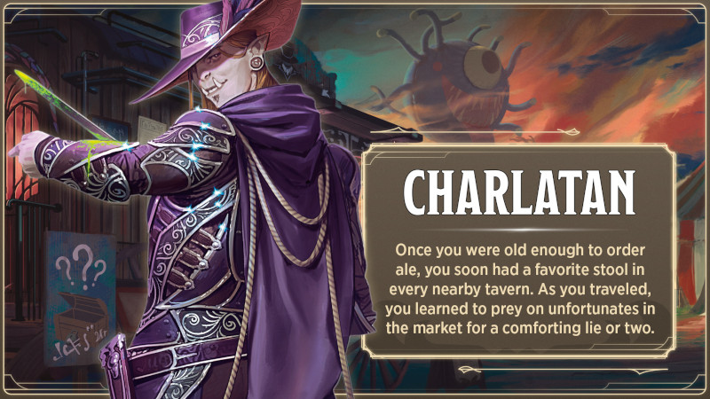
Criminel
Valeurs de caractéristique. Dextérité, Constitution, Intelligence
Don. Vigilant
Maîtrises de compétence. Escamotage et Discrétion
Maîtrise d'outils. Outils de voleur
Équipement. Choisissez A ou B : (A) 2 dagues, outils de voleur, pied-de-biche, 2 sacoches, tenue de voyage, 16 po ; ou (B) 50 po
Vous gagniez péniblement votre vie dans de sombres ruelles, coupant des bourses ou cambriolant des boutiques. Peut-être faisiez-vous partie d'une petite bande de malfrats partageant les mêmes idées et se protégeant les uns les autres. Ou peut-être étiez-vous un loup solitaire, luttant seul contre une guilde des voleurs locale ou d'autres criminels encore plus redoutables.
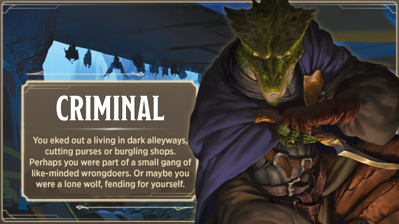
Ermite
Valeurs de caractéristique. Constitution, Sagesse, Charisme
Don. Guérisseur
Maîtrises de compétence. Médecine et Religion
Maîtrise d'outils. Matériel d'herboriste
Équipement. Choisissez A ou B : (A) Bâton de combat, matériel d'herboriste, sac de couchage, livre (philosophie), lampe, huile (3 flasques), tenue de voyage, 16 po ; ou (B) 50 po
Vous avez passé votre enfance reclus dans une hutte ou un monastère situé bien au-delà des limites du village le plus proche. À cette époque, vos seuls compagnons étaient les créatures de la forêt et ceux qui venaient occasionnellement vous apporter des nouvelles du monde extérieur et des provisions. Cette solitude vous permettait de passer de longues heures à méditer sur les mystères de la création.
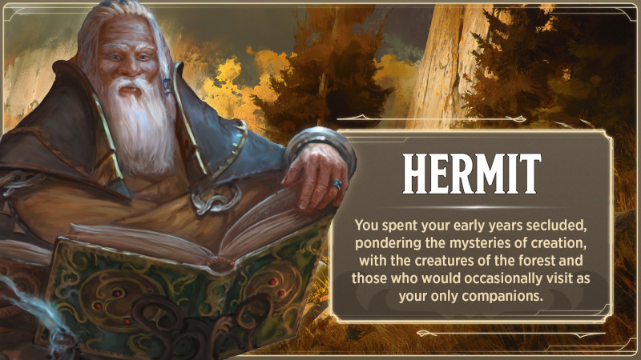
Fermier
Valeurs de caractéristique. Force, Constitution, Sagesse
Don. Robuste
Maîtrises de compétence. Dressage et Nature
Maîtrise d'outils. Outils de charpentier
Équipement. Choisissez A ou B : (A) Serpe, outils de charpentier, trousse de soins, pot en fer, pelle, tenue de voyage, 30 po ; ou (B) 50 po
Vous avez grandi au contact de la nature. Des années passées à prendre soin des animaux et à cultiver la terre vous ont procuré patience et une excellente santé. Vous appréciez profondément les bienfaits de la nature, tout en respectant sa colère.
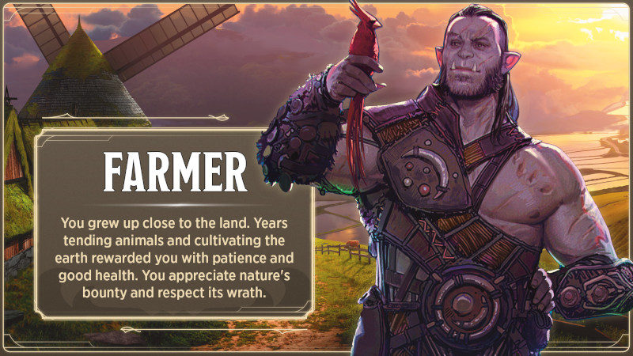
Garde
Valeurs de caractéristique. Force, Intelligence, Sagesse
Don. Vigilant
Maîtrises de compétence. Athlétisme et Perception
Maîtrise d'outils. Choisissez un type de boîte de jeux
Équipement. Choisissez A ou B : (A) Lance, arbalète légère, 20 carreaux, boîte de jeux (identique à ci-dessus), lanterne à capote, menottes, carquois, tenue de voyage, 12 po ; ou (B) 50 po
Vos pieds vous font mal au souvenir des innombrables heures passées à votre poste dans la tour. Vous étiez entraîné à garder un œil sur l'extérieur des murs, guettant les maraudeurs rôdant depuis la forêt voisine, et l'autre œil sur l'intérieur des murs, à la recherche de voleurs à la tire et de fauteurs de troubles.
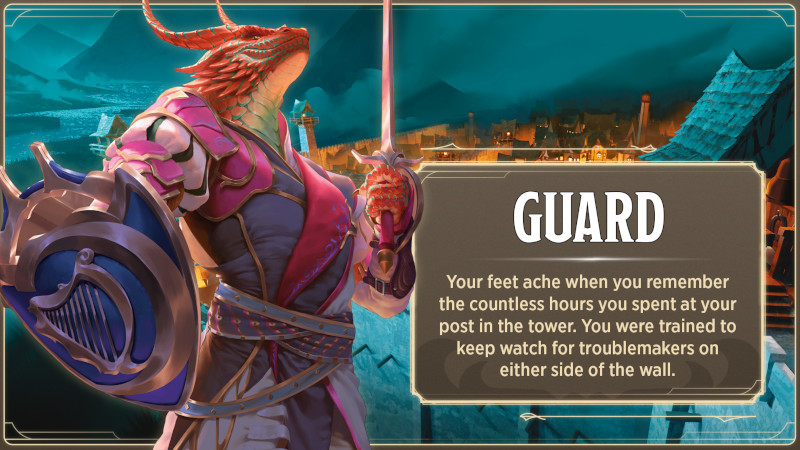
Guide
Valeurs de caractéristique. Dextérité, Constitution, Sagesse
Don. Initié à la magie (druide)
Maîtrises de compétence. Discrétion et Survie
Maîtrise d'outils. Outils de cartographe
Équipement. Choisissez A ou B : (A) Arc court, 20 flèches, outils de cartographe, sac de couchage, carquois, tente, tenue de voyage, 3 po ; ou (B) 50 po
Vous avez grandi en pleine nature, loin des terres habitées. Votre foyer était partout où vous choisissiez d'étendre votre sac de couchage. La nature sauvage recèle des merveilles : d'étranges monstres, des forêts et des ruisseaux vierges, des ruines envahies par la végétation de grandes salles jadis foulées par des géants. Vous avez appris à vous débrouiller seul en les explorant. De temps à autre, vous guidiez des prêtres de la nature bienveillants qui vous enseignaient les rudiments de la canalisation de la magie sauvage.
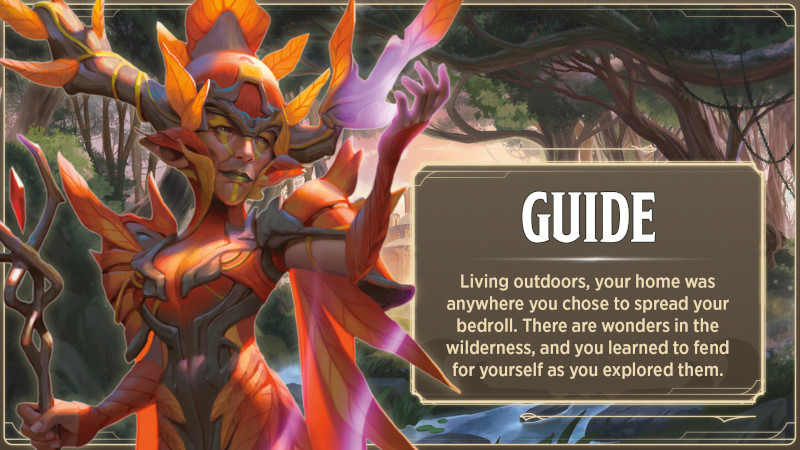
Marchand
Valeurs de caractéristique. Constitution, Intelligence, Charisme
Don. Chanceux
Maîtrises de compétence. Dressage et Persuasion
Maîtrise d'outils. Instruments de navigateur
Équipement. Choisissez A ou B : (A) Instruments de navigateur, 2 sacoches, tenue de voyage, 22 po ; ou (B) 50 po
Vous avez fait votre apprentissage chez un marchand, un caravanier ou un boutiquier, apprenant les rudiments du commerce. Vous avez beaucoup voyagé et gagné votre vie en achetant et en vendant les matières premières nécessaires aux artisans ou leurs produits finis. Vous avez peut-être transporté des marchandises d'un endroit à un autre (par bateau, chariot ou caravane) ou les avez achetées à des marchands ambulants pour les revendre dans votre propre boutique.
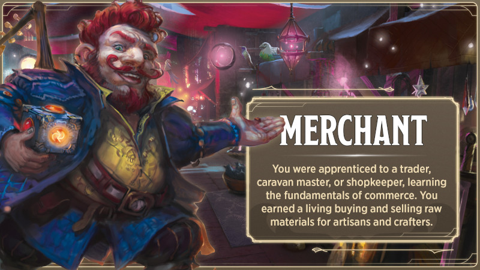
Marin
Valeurs de caractéristique. Force, Dextérité, Sagesse
Maîtrises de compétence. Acrobaties et Perception
Maîtrise d'outils. Instruments de navigateur
Équipement. Choisissez A ou B : (A) Dague, instruments de navigateur, corde, tenue de voyage, 20 po ; ou (B) 50 po
Vous avez vécu comme un marin, le vent dans le dos et le pont qui tanguait sous vos pieds. Vous avez siégé sur des tabourets de bar dans d'innombrables ports, affronté de terribles tempêtes et échangé des histoires avec ceux qui vivent sous les vagues.
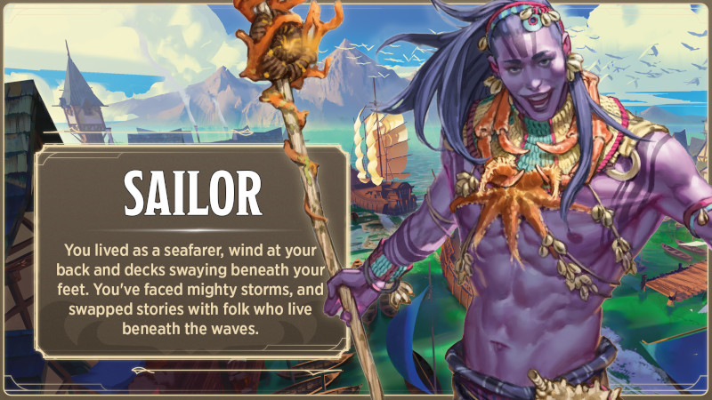
Noble
Valeurs de caractéristique. Force, Intelligence, Charisme
Don. Doué
Maîtrises de compétence. Histoire et Persuasion
Maîtrise d'outils. Choisissez un type de boîte de jeux
Équipement. Choisissez A ou B : (A) Boîte de jeux (identique à ci-dessus), beaux habits, parfum, 29 po ; ou (B) 50 po
Vous avez grandi dans un château, entouré de richesse, de pouvoir et de privilèges. Votre famille, issue de la petite noblesse, a veillé à ce que vous receviez une éducation de premier ordre, dont certains aspects vous ont plu et d'autres vous ont déplu. Votre séjour au château, et notamment les nombreuses heures passées à observer votre famille à la cour, vous a également beaucoup appris sur l'autorité.
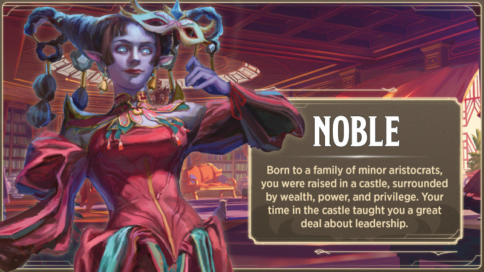
Sage
Valeurs de caractéristique. Constitution, Intelligence, Sagesse
Don. Initié à la magie (magicien)
Maîtrises de compétence. Arcanes et Histoire
Maîtrise d'outils. Matériel de calligraphe
Équipement. Choisissez A ou B : (A) Bâton, Matériel de calligraphe, livre (histoire), parchemin (8 feuilles), robe, 8 po ; ou (B) 50 po
Vous avez passé des années à voyager entre manoirs et monastères, effectuant divers petits travaux et services en échange d'un accès à leurs bibliothèques. Vous avez ainsi passé de longues soirées à étudier des livres et des parchemins, à engranger des connaissances sur le multivers et à acquérir des rudiments de magie. Votre esprit aspire maintenant à plus.
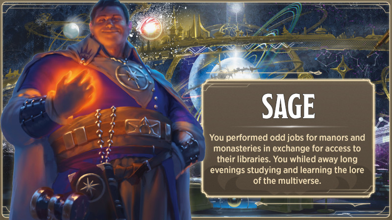
Scribe
Valeurs de caractéristique. Dextérité, Intelligence, Sagesse
Don. Doué
Maîtrises de compétence. Investigation et Perception
Maîtrise d'outils. Matériel de calligraphe
Équipement. Choisissez A ou B : (A) Matériel de calligraphe, beaux habits, lampe, huile (3 flasques), parchemin (12 feuilles), 23 po ; ou (B) 50 po
Vous avez passé vos années de formation dans un scriptorium, un monastère dédié à la préservation du savoir, ou au sein d'une administration, où vous avez appris à écrire d'une main lisible et à produire des textes soignés. Peut-être avez-vous recopié des documents officiels ou des ouvrages littéraires. Vous possédez peut-être un certain talent pour l'écriture de poésie, de récits ou de travaux de recherche. Surtout, vous avez le souci du détail, ce qui vous permet d'éviter les erreurs dans les documents que vous copiez et créez.
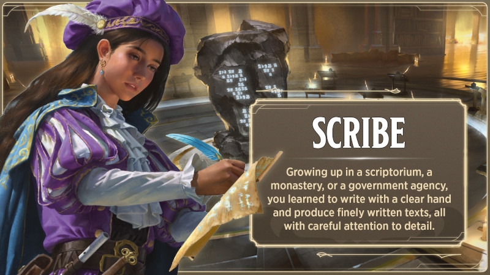
Soldat
Valeurs de caractéristique. Force, Dextérité, Constitution
Don. Sauvagerie martiale
Maîtrises de compétence. Athlétisme et Intimidation
Maîtrise d'outils. Choisissez un type de jeu (voir Équipement)
Équipement. Choisissez A ou B : (A) Lance, arc court, 20 flèches, jeu (identique au précédent), trousse de soins, carquois, tenue de voyage, 14 po ; ou (B) 50 po
Vous vous êtes entraîné à la guerre dès l'âge adulte et n'avez que peu de précieux souvenirs de votre vie avant de prendre les armes. Le combat est dans votre sang. Parfois, vous vous surprenez à exécuter par réflexe vos premiers exercices de combat. Au final, vous avez mis cet entraînement en pratique sur le champ de bataille, en faisant la guerre pour protéger le royaume.
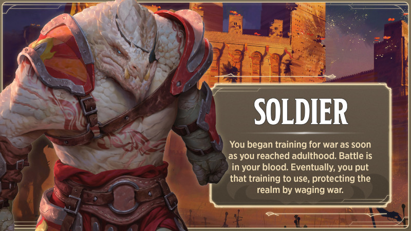
Voyageur
Valeurs de caractéristique. Dextérité, Sagesse, Charisme
Don. Chanceux
Maîtrises de compétence. Discrétion et Intuition
Maîtrise d'outils. Outils de voleur
Équipement. Choisissez A ou B : (A) 2 dagues, outils de voleur, boîte de jeux (au choix), sac de couchage, 2 sacoches, tenue de voyage, 16 po ; ou (B) 50 po
Vous avez grandi dans la rue, entouré de marginaux au destin tout aussi malheureux, certains amis, d'autres rivaux. Vous dormiez où vous pouviez et faisiez des petits boulots pour vous nourrir. Parfois, quand la faim devenait insupportable, vous voliez. Pourtant, vous n'avez jamais perdu votre fierté ni votre espoir. Le destin n'a pas encore dit son dernier mot.
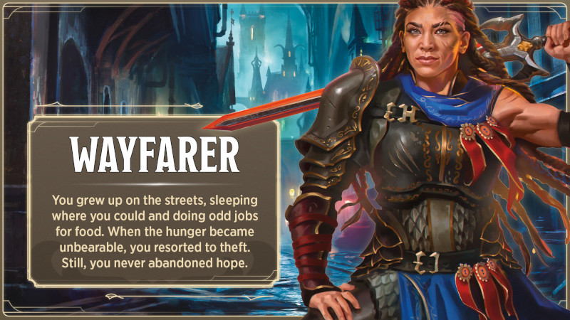